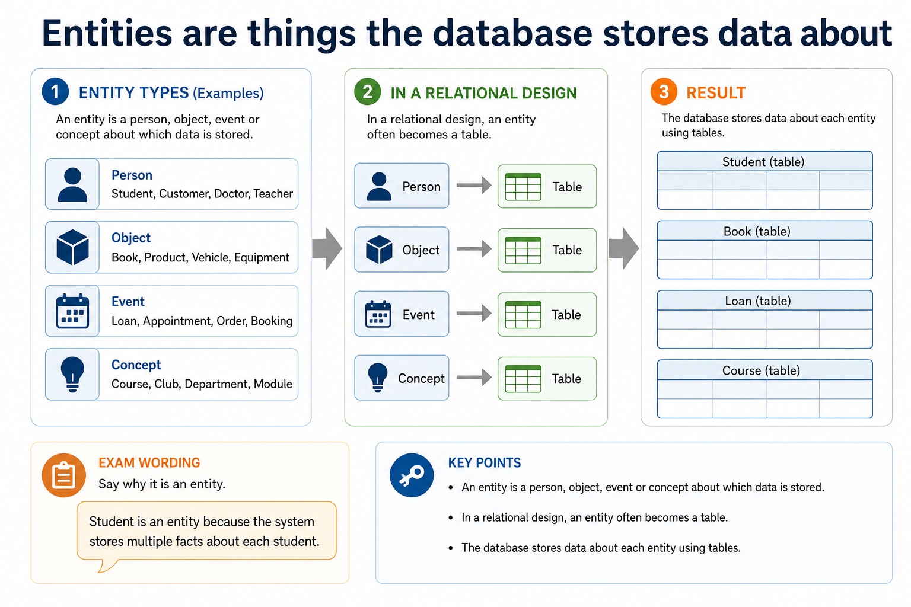
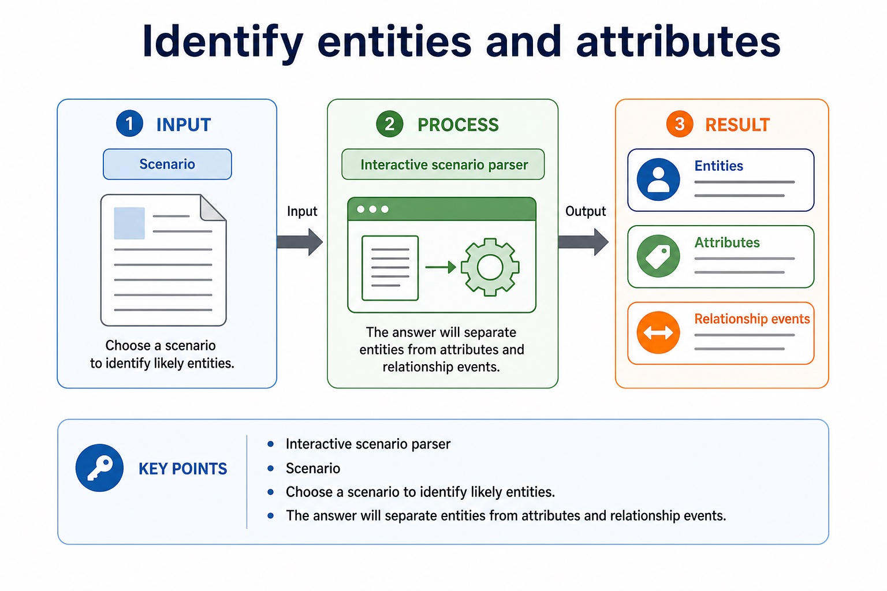
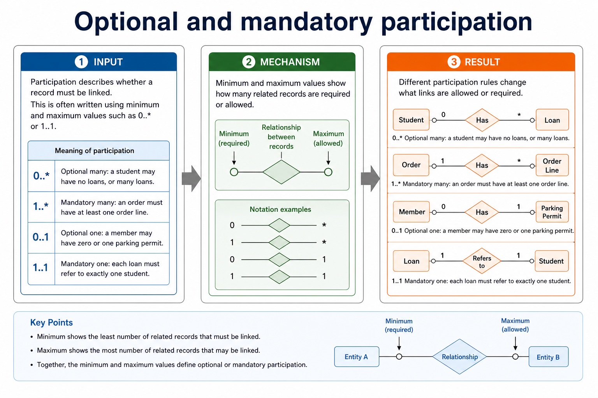

S8.03, S8.04 | Learn from the diagrams, test the method, then choose the practice you need.
Choose a Quick, Full or Deep route
Quick route
Use the diagnostic, learning objectives, first worked example and foundation question. Stop once the learner can explain the central distinction accurately.
Full route
Use every knowledge-point material set, the worked method, the terminology check and all questions.
Deep route
Add the prerequisite refresher, ask learners to connect the concept checklist, discuss the labelled extension and complete a transfer question without a model answer.
Part 1 | optional depth
Prerequisite knowledge and quick diagnostic
Recall S8.02 before starting this lesson.
Give one accurate definition or method step before continuing. If it is missing, revisit only that prerequisite.
Open optional prerequisite refresher
Version 2 explicitly names entity, table, record, field, tuple, attribute, primary key, candidate key, secondary key, foreign key, one-to-one, one-to-many, many-to-many, referential integrity and indexing. Secondary key is retained as a distinct retrieval term, not an alias for an alternate candidate key.
Follow the map, the three-part explanation and the concrete cue. Open precise wording only after the idea is clear.
Open the concept checklist and choose what to teach
entity-relationship
diagram
3NF
normalised / normalized
design
01
S8.03 · concept
Entity-relationship · Diagram
Concept map
entity-relationshipdiagram
See how it works
MeaningEvidence must include entities, relationships and cardinality, not merely define entity and attribute
MechanismVersion 2 requires candidates to use an entity-relationship diagram to document a database design
ConsequenceAn entity-relationship (E-R) diagram documents a database design by showing the entities, their relevant attributes or keys, the relationships between entities and the relationship cardinality
S8.03 diagrams
01
Comparison · 1 of 1
Section 8 knowledge map
Open text transcript
Retrieval map
Data and DBMS data vs information; DBMS roles; avoiding flat-file limitations
Tables and keys records, fields, data types, constraints, primary keys and foreign keys
Design entity-relationship modelling and normalisation to reduce duplication
SQL retrieval SELECT , FROM , WHERE , ORDER BY , aggregates and joins
SQL modification INSERT , UPDATE , DELETE , field/value matching and safe WHERE
Protection validation, verification, security controls, backups and restore testing
Open precise syllabus wording
Produce and interpret entity-relationship diagrams.
Version 2 requires candidates to use an entity-relationship diagram to document a database design. Evidence must include entities, relationships and cardinality, not merely define entity and attribute.
02
S8.04 · concept
1NF · 2NF · 3NF · Normalised
Concept map
1NF2NF3NFnormaliseddesign
See how it works
MeaningVersion 2 names First, Second and Third Normal Form and separately requires candidates to explain whether given tables are in 3NF and to produce a normalised…
Mechanismand explain or produce 1NF, 2NF and 3NF designs
ConsequenceVersion 2 requires candidates to use an entity-relationship diagram to document a database design
S8.04 diagrams
1 / 3
01
Diagram · 1 of 3
How normal forms remove dependency problems
Open text transcript
First Normal Form (1NF) requires atomic values and no repeating groups.
Second Normal Form (2NF) is in 1NF and removes partial dependency: each non-key attribute depends on the whole primary key.
Third Normal Form (3NF) is in 2NF and removes transitive dependency: a non-key attribute must not depend on another non-key attribute.
A valid decomposition retains every original fact, preserves keys and relationships, and follows the stated functional dependencies.
02
Comparison · 2 of 3
Relational design: what earns marks?
Open text transcript
Design review
Primary key Uniquely identifies a record in one table. It must be unique and reliable.
Foreign key Stores a value that matches a primary key in another table, creating a relationship.
Normalisation Separates repeated data into related tables to reduce duplication and update errors.
03
Concrete example · 3 of 3
Designing fields properly
Open text transcript
Each field should have a name, data type, possible field size and constraints. Good design reduces invalid data at entry.
Field name Clear and specific: DateOfBirth , not date .
Data type Controls the kind of data: text, integer, real, date/time, Boolean.
Field size Maximum storage length where relevant, such as 8 characters for StudentID.
Constraint A rule that a value must satisfy before it is accepted.
Open precise syllabus wording
Understand 1NF, 2NF and 3NF; explain 3NF and produce a normalised design.
Version 2 names First, Second and Third Normal Form and separately requires candidates to explain whether given tables are in 3NF and to produce a normalised design from a description, data or tables.
Supporting diagram library
1 / 15
01
Diagram · 1 of 15
Section 8 basics so far
Open text transcript
Monthly checkpoint
This checkpoint connects Lessons 079-080 without becoming a full exam.
Cardinality describes how many records may be linked
Open text transcript
Cardinality states how many records in one entity can be associated with records in another entity.
One-to-one One record in A links to one record in B. Example: one person has one passport in a simplified model.
One-to-many One record in A links to many records in B. Example: one customer can place many orders.
Many-to-many Many records in A link to many records in B. Usually resolved by a linking entity.
1 - many
10
Diagram · 10 of 15
Entities are things the database stores data about

Open text transcript
An entity is a person, object, event or concept about which data is stored. In a relational design, an entity often becomes a table.
Person Student, Customer, Doctor, Teacher.
Object Book, Product, Vehicle, Equipment.
Event Loan, Appointment, Order, Booking.
Concept Course, Club, Department, Module.
Exam wording: say why it is an entity. "Student is an entity because the system stores multiple facts about each student."
11
Diagram · 11 of 15
Identify entities and attributes

Open text transcript
Interactive scenario parser
Scenario
Choose a scenario to identify likely entities.
The answer will separate entities from attributes and relationship events.
12
Diagram · 12 of 15
Optional and mandatory participation

Open text transcript
Participation describes whether a record must be linked. This is often written using minimum and maximum values such as 0.. or 1..1.
0.. Optional many: a student may have no loans, or many loans.
1.. Mandatory many: an order must have at least one order line.
0..1 Optional one: a member may have zero or one parking permit.
1..1 Mandatory one: each loan must refer to exactly one student.
13
Diagram · 13 of 15
Do not swap the security vocabulary
Open text transcript
Protection review
Validation Checks data follows rules, such as range, type, format or presence.
Verification Checks entered data matches a source, using proofreading or double entry.
Security and backup Security restricts access; backup enables recovery after loss or corruption.
14
Diagram · 14 of 15
SQL clauses: choose the clause that matches the request
Open text transcript
For the clauses shown, written syntax order is SELECT, FROM, WHERE, GROUP BY, ORDER BY.
A simplified logical processing order is FROM, WHERE, GROUP BY, SELECT, ORDER BY.
GROUP BY forms groups and ORDER BY sorts the final rows.
Written syntax order and logical processing order are different.
15
Diagram · 15 of 15
Trace one mixed SQL result
Open text transcript
Interactive SQL tracer
Category
Networks
Computing
Literature
Databases
Choose a query to see the result.
Apply the idea
Worked method
01Design and query a library database
02Separate Student and Loan tables, identify StudentID as primary key in Student and foreign key in Loan, state the one-to-many relationship and referential-integrity rule, then write SELECT Student.StudentName, Loan.DueDate FROM Student INNER…
Open precise terminology and exam facts
Version 2 requires candidates to use an entity-relationship diagram to document a database design. Evidence must include entities, relationships and cardinality, not merely define entity and attribute.
Version 2 names First, Second and Third Normal Form and separately requires candidates to explain whether given tables are in 3NF and to produce a normalised design from a description, data or tables.
An entity-relationship (E-R) diagram documents a database design by showing the entities, their relevant attributes or keys, the relationships between entities and the relationship cardinality. Entity names should describe things about which the system stores multiple facts; attributes belong to the entity they describe.
To produce an E-R diagram, extract entity candidates from the scenario, assign identifiers, connect only supported relationships and label cardinality as one-to-one, one-to-many or many-to-many. Resolve a many-to-many relationship with a linking entity when converting the design to relational tables. A diagram must preserve the stated business rules rather than inventing links from similar field names.
1NF requires atomic values and no repeating groups. 2NF is 1NF with every non-key attribute dependent on the whole primary key, removing partial dependencies. 3NF is 2NF with no non-key attribute dependent on another non-key attribute, removing transitive dependencies.
Normalisation decomposes tables while preserving keys and relationships. A normalised 3NF design stores each fact once in the table identified by its determinant, reducing insertion, update and deletion anomalies.
A file-based approach can repeat facts in separate files, create inconsistent copies and isolate related data. A Database Management System (DBMS) addresses these file-based limitations by providing data management, including a data dictionary of metadata; data modelling; a logical schema; data integrity; and data security. Security includes backup procedures and access rights assigned to individual users or groups.
A developer interface provides tools used to define structures and build database applications, forms or reports. A query processor interprets and checks a query, chooses how to carry it out, accesses the stored data and returns or modifies the specified records while the DBMS applies access and integrity rules.
Relational databases address file-based duplication, inconsistency, isolation and access problems through related tables, keys, constraints and managed queries.
Database design review: connect each file-based limitation to a relational or DBMS mechanism; use entity/table, record/tuple and field/attribute precisely; distinguish candidate, primary, secondary and foreign keys; classify one-to-one, one-to-many and many-to-many relationships; apply referential integrity and indexing; document the design with an E-R diagram; and explain or produce 1NF, 2NF and 3NF designs.
DBMS and SQL review: identify data management/data dictionary, data modelling, logical schema, integrity, security/backup/access rights, developer interface and query processor. Distinguish DDL structure commands from DML query/maintenance commands, use every required data type and key clause, and keep SELECT queries to at most two tables with explicit INNER JOIN ... ON when two tables are needed.
A complete answer follows the scenario through design, statement and result. It does not claim that a primary key prevents every duplicate fact, that a secondary key must be unique, that normalisation guarantees correctness, or that a three-table/comma-style query is within the AS core boundary.
Beyond syllabus / 延伸知识（不要求背诵）
production databases also manage transactions and concurrent users; these ideas extend the syllabus model of integrity and access control.
Part 3 | select by learner need
Practice by question type
writerecallfoundation8 marks
Question 1. A clinic stores Patients, Doctors and Appointments. Write an E-R design in words or a labelled diagram and state the two relationship cardinalities. Explain why CUSTOMER(CustomerID, Postcode, Town) may not be in 3NF when each postcode determines one town, and give a 3NF design. A school is introducing a relational DBMS. Explain four DBMS features and the distinct purposes of the developer interface and query processor.
Show answer and marking guidance
Answer: identifies Patient, Doctor and Appointment as entities; gives a suitable identifier/key for each entity; Patient has a one-to-many relationship with Appointment; Doctor has a one-to-many relationship with Appointment; Appointment carries the linking foreign keys / resolves the patient-doctor many-to-many history; attributes and relationship directions are consistent with the scenario; CustomerID determines Postcode and Postcode determines Town; Town is transitively dependent on CustomerID / depends on non-key Postcode; CUSTOMER(CustomerID, Postcode); POSTCODE(Postcode, Town), with Postcode linked as foreign key; data management/data dictionary stores metadata about structure; data modelling or logical schema represents the database design; integrity rules maintain valid and consistent data; security uses access rights and backup procedures; developer interface supports defining structures or building database applications/forms/reports; query processor interprets/checks and carries out queries or maintenance statements
Marking guidance: Do not award a collection of unconnected entity boxes as a complete E-R design. Do not award decomposition marks unless primary/foreign-key linkage can reconstruct the relationship. Do not treat the database, data dictionary, developer interface and query processor as interchangeable names.
Common error: For the command word write, perform that exact action; do not replace it with an unrelated fact.
explainexplainapplication2 marks
Question 2. Why add Membership between Student and Club?
Show answer and marking guidance
Answer: It resolves the many-to-many relationship into two one-to-many relationships.
Marking guidance: Award one mark for each distinct, technically accurate point or method step.
Common error: Do not repeat the same point in different words; each mark needs a separate idea or method step.
drawdiagramtransfer2 marks
Question 3. Why is matching field spelling not enough to draw a relationship?
Show answer and marking guidance
Answer: The scenario/business rule must state or imply that the records are associated.
Marking guidance: Award one mark for each distinct, technically accurate point or method step.
Common error: Do not copy the worked example unchanged; transfer the method and check it against the new context.
Related past-paper indexes
Reference
Marks
Command word
Question type
9618/11/W/25 Q2(ii)
4
complete
recall
9618/13/W/25 Q5(a)
3
complete
recall
9618/11/W/25 Q2(a)
2
complete
recall
9618/11/W/25 Q2(b)
2
complete
recall
Index only: Cambridge question and mark-scheme wording is not reproduced on this public course page.
Part 4 | close when ready
Summary and exam reminders
Summary
Define entity-relationship design and normalisation with the exact technical vocabulary expected by the syllabus.
Use the lesson method on a fresh context and show the intermediate decision, representation or calculation.
Match the shape of the answer to the command word and the available marks.
Check the final answer against the scenario instead of repeating a memorised sentence.
Common error to correct
Students often choose names as primary keys. Correction: a primary key must uniquely and reliably identify a record.
Exam technique
Follow the command word: state gives a fact; explain links a cause to a consequence; compare covers both sides.
Match the number of independent points or method steps to the available marks.
For entity-relationship design and normalisation, use the exact technical term before applying it to the scenario.